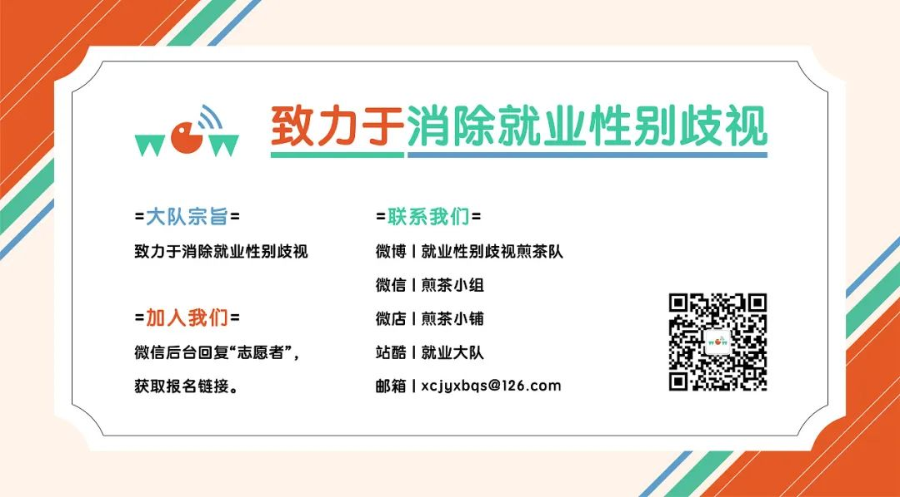

海外2022年12月|为世界各地妇女争取自身权利而喝彩

海外之声 2022.12.01
【卡塔尔】男足世界杯史上首个全女性裁判队伍将在周四亮相
在卡塔尔多哈，世界上最受欢迎的运动中，女性的另一个里程碑式时刻将于周四到来（北京时间12月2日周五3点）——届时男子世界杯历史上第一支全女性裁判队将在德国和哥斯达黎加之间的关键比赛中首次亮相。
国际足联周三宣布，首席裁判斯蒂芬妮·弗拉帕尔(Stéphanie Frappart)将率领巴西助理裁判诺伊萨·巴克（ Neuza Back ）和墨西哥助理裁判凯伦·迪亚兹（Karen Diaz）一起参加这场比赛。
在推特上，许多球迷称赞国际足联将这些裁判纳入其中的决定，因为这为女性在体育界提供了更好的代表。“这一次，我要为国际足联做的一件事鼓掌:WC比赛中出现了第一位女裁判!有人写道。“这太晚了，这还不够，不应该掩盖女性在足球领域(作为运动员和足球管理机构)受到歧视的程度，但这一进步本身是积极和有力的。”
弗拉帕尔也是首位负责欧冠比赛的女性，她于2020年首次在欧洲顶级俱乐部比赛中亮相，自2019年以来还担任法甲比赛的裁判。法帕特曾被提名参加2020年欧洲杯，但没有被选为主裁判。另外还有两名女裁判也出现在世界杯的阵容中，她们是——卢旺达的萨利玛·穆坎桑加(Salima Mukansanga)和日本的山下芳美(yoshii Yamashita)。
“我们出现在这里是因为我们就应该在这里。”穆坎桑加在世界杯开始前在多哈告诉记者。
(来源：SBS News、Independent；翻译：Karen）


海外之声 2022.12.02
【墨西哥】资源缺乏加剧了墨西哥性别犯罪的有罪不罚
研究组织 Impunidad Cero在一份报告中表示，在过去六年中，43% 的杀害女性案件最终被定罪，同时指出只有少数案件被作为针对女性的谋杀（femicide——因为妇女或女孩的性别而被杀害，这种犯罪行为会面临更严厉的刑罚）进行调查。
在今年前九个月当局记录的 5,600 多起妇女和女童遇害事件中，一半被认定为过失杀人，38% 被认定为谋杀。该报告发现，无论男女，谋杀定罪率仅为 7%。根据该组织和联合国的数据，墨西哥是拉丁美洲谋杀率最高的地区之一，也是全球谋杀率最高的地区。
Impunidad Cero 的数据分析师蒙塞拉特·洛佩兹 (Monserrat Lopez) 告诉记者，军事化趋势正在排挤负责调查针对女性的谋杀的民间机构。胡安·安东尼奥·勒克莱尔克（Juan Antonio Le Clercq ）在普埃布拉美洲大学 (UDLAP) 研究有罪不罚问题，他表示，州司法办公室的预算平均每年人均仅为 14.29 比索（0.75 美元）——这加剧了处理犯罪报告的公职人员的短缺。“我不知道应该由谁来调查这些罪行，”他在介绍这份报告的新闻发布会上说。
上周，被害妇女和女童的父母在墨西哥城游行要求伸张正义，许多人表示他们的案件没有得到充分调查或拖延多年。Impunidad Cero 在其报告中称，墨西哥各州去年平均每 10 万人约有 10 名检察官，13 名警方调查员和 7 名专家。勒克莱尔克说，墨西哥每 10万人只有 4 名法官，按照目前的增长率需要 98 年才能赶上欧洲每 10万人 23 名法官的水平。
他补充说，尽管墨西哥州的调查能力较弱，但其监禁人数是全国平均水平的两倍——因为许多被拘留者无力聘请律师。Impunidad Cero 建议机构合作制定更好的规程和能力来调查性别暴力，并制定犯人重新融入社会的措施以防止其再次犯罪。
(来源：路透社；翻译：Karen）

海外之声 2022.12.05
【印度】逊尼派领导人反对给予妇女平等财产权的承诺
逊尼派领袖纳萨尔法伊兹库达塔伊(Nasar Faizi Koodathayi)于上周五发表了一项有争议的言论，涉及向库丹巴什里(Kudumbashree)志愿者许下的一项承诺，该承诺称女性成员应该对父亲的财产拥有平等权利。
伊兹(Faizi)为萨马萨喀拉拉邦贾姆-伊亚图尔·库特巴委员会(Samastha Kerala ham - iyyathul Qutba Committee)秘书长、逊尼派尤贾纳·桑汉姆(Yujana Sangham)国务秘书，他表示，这一承诺侵犯了穆斯林的基本权利，因为宪法允许每种宗教的成员在结婚、离婚、财产权和葬礼仪式方面遵守属人法。法伊兹认为，这一誓言违反了古兰经中男性可以得到女性两倍份额的规定。
他在脸书上发帖称，喀拉拉邦政府为农村发展部发起的性别运动设想了各种方案。他写道:“该项目中的许多内容值得称赞，但也有侵犯基本宗教权利的成分。”有争议的部分是分发给该邦格拉玛村务委员会和库丹巴什传教团的通告的一部分。通告要求会员在性别资源会议上宣誓，“我们将为男性和女性提供平等的财产权利。”
法伊兹说:“伊斯兰教曾允许妇女拥有财产权，但当时她们不被允许分享任何东西。但是，(伊斯兰教中)妇女可以得到男子从父亲继承的财产的一半的规定不能被解释为不公正。”他说，男性成员承担了全部的照顾家庭的责任，但女性不需要花费她的份额去持家。“那些批评这项规定的人忘记了男性的额外负担。以性别中立的名义违反宪法和宗教基本原则的企图肯定会招致抗议。”
PS：库丹巴什里(Kudumbashree)的通告还要求成员承诺，他们将不歧视地庆祝男性和女性孩子的出生，并在教育和就业方面提供平等的机会。
(来源：印度快报；翻译：Karen）
海外之声 2022.12.06
【韩国】女权主义者抗议席卷韩国的反女权主义浪潮
韩国的女权主义者周日在全国范围内举行反对基于性别的暴力的抗议活动，这是自大流行以来首次在几个主要城市同时举行抗议活动。这是对席卷韩国的反女权主义浪潮的回应，引发了一场紧张的性别战争。在韩国，围绕女性权利的讨论是禁忌，韩国男性声称他们现在成为了性别歧视的受害者。
疫情使得大多数公众集会被迫中止，但随着今年限制的放松，更多的女权主义者重返街头。
10 月，来自全国各地的数千人涌入首尔，抗议总统废除性别平等和家庭部的计划。包括韩国妇女联合会在内的公民、劳工和社会团体联手呼吁政府促进妇女权利。周日（12月4日），女权组织 Haeil（韩语为“海啸”）领导了首尔、光州和釜山等城市的抗议活动。
韩国的女权运动在过去五年取得了长足进步，创造了亚洲最成功的#MeToo 运动之一。该运动罢免了被指控性行为不端的主要公众人物，包括韩国第二大城市釜山市市长。
但现在有些人认为事情已经发展得太过分了。
尹锡月在今年早些时候赢得了总统大选，他的竞选纲领是指责女权主义者对男性的贬抑，并吸引那些觉得自己必须在韩国日益增长的经济不安全感和萎缩的就业市场中首当其冲的年轻男性。本来旨在增加女性经济机会和缩小性别收入差距的政策，加剧了年轻男性对女性的怨恨。
反女权主义者在社交媒体(sns)和网络社区传播“韩国女权主义者是激进的男性憎恨者”的观点。一个拥有50多万订阅用户的YouTube频道视频，将女权主义者视为宣扬女性沙文主义的“精神病”激进分子。
尹锡月最近几个月继续推进他的反女权主义议程，并且坚称他将贯彻他的竞选计划，废除性别平等和家庭部。该部门成立于2001年，旨在为遭受性暴力和家庭暴力的女孩提供资源，并确保政策不存在性别歧视。他指责该部门的官员将男性视为“潜在的性犯罪者”，加剧了性别不平等。
(来源：NPR；翻译：Karen）

海外之声2022.12.07
【英国】2022年度BBC百位杰出女性：谁会上榜？
BBC公布了2022年度100位来自世界各地的最鼓舞人心与最有影响力的女性名单。
在她们之中，有全球级的现象级音乐巨星比莉·艾莉许，乌克兰第一夫人叶莲娜·泽连斯卡娅，女演员琵艳卡·乔普拉和莎瑪·布莱尔，俄罗斯流行音乐女皇阿拉·普加乔娃，伊朗攀登运动员埃爾納茲·雷比卡，世界三级跳远破纪录者尤利瑪·罗哈斯，以及加纳作家纳纳·达科阿·塞基亚马。
这是第十期年度女性评选，所以我们可以通过浏览过去10年的进程，来了解哪些女性权益获得了巨大的进步，从寥寥几人的女性领导者到后来女性广泛参与的MeToo社会运动，同时，对于世界各个角落的女性来说，争取平权还有很长的路要走。
这个列表也反映了女性在2022年激烈冲突中所扮演的角色——在伊朗的游行示威者们勇敢地要求改变之中，以及在乌克兰和俄罗斯的冲突中都可以看见女性的身影。同时，也是首次，我们询问了过去上榜的女性来提名她们认为可以在2022的列表上占据一席之地的女性。
这次评选主要按照四个领域来归类，政治与教育，文化与体育，行动主义与倡议，还有健康与科学，每个类别各有25名女性。
政治与教育类：
阿伊莎·马利克 , 巴基斯坦，法官
埃里卡·希尔顿 , 巴西，政治家
伊娃·科帕, 玻利维亚，政治家
伊比乔克·法博罗德, 尼日利亚，ElectHER创始人
克里斯蒂娜·别尔丁斯基赫, 乌克兰，记者
乔伊·恩戈齐·埃塞洛, 尼日利亚，法学教授
基萨内特·泰德罗斯, 厄立特里亚，教育企业家
塞皮德·乔利延, 伊朗，政治活动家
奥莱娜·泽连斯卡, 乌克兰，第一夫人
娜塔莉·贝克夸特, 梵蒂冈，修女
娜奥米·朗, 北爱尔兰，政治家
扎拉·穆罕默迪, 伊朗，教育家
扎赫拉·乔亚, 阿富汗，记者
朴智炫, 韩国，政治改革家
梅恩·奥拜迪, 也门，律师
法蒂玛·阿米里, 阿富汗，学生
泰西娅·贝克布拉托娃, 俄罗斯，记者
乌尔苏拉·冯德莱恩, 德国，欧盟委员会主席
玛丽亚·费尔南达·卡斯特罗·玛雅, 墨西哥，捍卫残疾人权利行动主义者
米娅·莫特利, 巴巴多斯，总理
罗莎·萨利赫, 苏格兰，政治家
西蒙娜·特贝特, 巴西，巴西联邦参议院议员
证严法师, 台湾，佛教慈善家
那赞宁·扎格里-拉特克利夫, 英国／伊朗，慈善工作者
香奈儿·康托斯, 澳洲，“同意发生性关系”（sexual consent）倡导者
文化与教育类：
亚历山德拉·斯科奇连科, 俄罗斯，艺术家
劳拉·麦卡利斯特, 威尔斯，教授，前足球运动员
吉坦伽利·史瑞, 印度，作家
埃斯拉·瓦尔达, 阿尔及利亚／美国，舞蹈家
埃尔纳兹·雷卡比, 伊朗，登山者
塞尔玛·布莱尔, 美国，演员
奥纳·卡尔波内尔, 西班牙，游泳运动员
姜美而, 香港，时装设计师
娜娜·达科亚·塞基亚玛, 加纳，作家
尤利马尔·罗哈斯, 委内瑞拉，运动员
怪奇比莉, 美国，创作歌手
扎尔·阿米尔-易卜拉希米, 伊朗，演员
斯内哈·贾瓦莱, 印度，社会工作者
昂斯·贾布尔, 突尼斯，网球运动员
普里扬卡·乔普拉, 印度，演员及制片人
李美敬, 韩国，制片人
瑞玛·朱法利, 沙特阿拉伯，赛车手
米利, 泰国，说唱歌手
维利亚·维达尔, 哥伦比亚，作家
莎拉·陈, 南苏丹，NBA侦察者
莎莉·斯凯尔斯, 澳洲，艺术家
萨利玛·拉迪亚·穆坎桑加, 卢旺达，足球裁判
迪马·阿克塔, 叙利亚，跑步者
阿拉·普加乔娃, 俄罗斯，音乐家
丽塔·莫雷诺, 波多黎各／美国，演员
行动主义倡导类：
杰拉尔迪娜·格拉·加西斯, 厄瓜多尔，反杀害女性活跃分子
列克桑德拉·马特维丘克, 乌克兰，人权律师
周晓璇, 中国，女权活动家
哈德·汉迪, 埃及，牙医和人权卫士
哈扎图·摩尼, 尼日尔，反奴隶制活动家
埃弗拉特·蒂尔玛, 以色列，义工
塔拉纳·伯克, 美国，活动家
塔马纳·扎里亚布·帕里亚尼, 阿富汗，活动家
塞西·弗洛雷斯, 墨西哥，活动家
女性剪头发, 伊，抗争者
尤莉娅·萨丘克, 乌克兰，残疾人士领袖
爱丽丝·帕塔索, 巴西，原住民行动主义者
戈哈尔·埃什吉, 伊朗，民权活动家
拉里亚, 伊朗，抗议者
朱迪思·休曼, 美国，残疾人权利倡导者
桑吉塔·伊斯兰·卓娅, 孟加拉国，学生
桑迪亚·埃克纳利戈达, 斯里兰卡，人权活动家
海蒂·克劳特, 英国，残疾人仕活动家
纳吉斯·穆罕默迪, 伊朗，人权活动家
维尔马里里·班巴里, 印尼，行动主义者
罗亚·皮雷伊, 伊朗，行动主义者
莫德·戈巴, 英国，LGBTQI +活动家
萨比娜·内萨, 英国，活动家
苏瓦达·塞利莫维奇, 波士尼亚与赫塞哥维纳，和平倡导者
丽娜·阿布·阿克勒, 巴勒斯坦，人权活动家
健康与科学类：
亚娜·津科维奇, 乌克兰，政治家和前线医疗义工
伊琳娜·康德拉托娃, 乌克兰，儿科医生
伊菲玛·奥佐玛, 美国，公共政策和科技专家
娜雅·莱伯斯, 格陵兰，心理学家
尤利娅·派耶夫斯卡, 乌克兰，护理人员
尼加尔·马尔夫, 伊拉克，护士
尼卢法尔·巴亚尼, 伊朗，生态学家
平田仁子, 日本，气候活动家
桑迪·卡布雷拉·阿特加, 洪都拉斯，生育权利倡导者
玛丽·克里斯蒂娜·科洛, 马达加斯加，气候企业家
玛丽娜·维亚佐夫斯卡, 乌克兰，数学家
简·里格比, 美国，天文学家和天体物理学家
索菲亚·海诺宁, 阿根廷，生态环境保护者
维多利亚·巴蒂斯特, 美国，护士和疫苗教育工作者
艾丽卡·里里亚诺, 多明尼加，可可企业家
莫妮卡·穆松达, 赞比亚，女实业家
莫妮卡·辛普森, 美国，生殖正义倡导者
萨姆拉维特·费克鲁, 埃塞俄比亚，科技企业家
裘蒂·金巴, 肯亚，手语翻译员
诶宁杜, 缅甸，医生
迪莱克·居尔索伊, 德国，心脏外科医生
里沙·班德拉, 印度，航空工程师
阿伊努拉·萨金, 吉尔吉斯，工程师
阿索内尔·科图, 南非，科技企业家
韦加塔·格布雷约汉内斯·阿贝拉, 埃塞俄比亚，提格雷，人道主义援助工作者
（来源：BBC；翻译：Sophie）
海外之声2022.12.09
【美国】Lizzo利用人民选择奖的演讲来“扩大这 17 位活动家被边缘化的声音”
Lizzo 已经做好了被爱的准备，她正在四处传播这种爱。这位“To Be Loved”和“About Damn Time”歌手兼词曲作者是周二美国人民选择奖的人民冠军奖得主，这一荣誉表彰了这位艺人对音乐和电视的影响，以及她倡导多样性和包容性。
然而，她没有亲自领奖，而是介绍了 17 位她认为更值得表彰的女性活动家。其中之一是塔米卡·帕尔默 (Tamika Palmer)，她是 2020 年枪击事件的受害者布伦娜·泰勒 (Breonna Taylor) 的母亲，在一次警方对她家的缉毒行动中丧生。
Lizzo 的母亲 Shari Johnson-Jefferson 由衷地介绍到自己34 岁的女儿“她向我们展示了，我们不必遵守任何人的标准才能快乐、有创造力和有价值。我知道 Lizzo 真的拯救了生命。没有人比她更配得上这一荣誉。”
然后，身着大胆的Alexander McQueen礼服，这位格莱美和艾美奖的得主在舞台上翻开了接受奖项的发言稿，让人们关注为土著人、变性人、宗教和文化平等以及其他事业而奋斗的妇女活动家。
“当我第一次听说这个奖项时，我对是否应该接受犹豫不决。因为如果我是人民冠军，我不需要用奖杯来支持人民，” Lizzo 在圣莫尼卡的 Barker Hangar 登台时说道。
“今晚我来这里是因为成为一个偶像并不在于你登上舞台时间的长短，而是你利用这个舞台为人们做了什么。自从我的职业生涯开始以来，我一直利用我的平台来放大边缘化的声音。所以今晚，我将分享这一荣誉。为人民发出一些声音，”她补充道，并介绍了她认为“值得关注”的女性活动家，并要求人们“请把鲜花送给她们”。
如下是这些女性活动家和 Lizzo 对她们的评价：
阿玛丽亚娜-科佩尼（Amariyanna Copeny），也被称为弗林特小小姐。一个15岁的孩子，"在过去的八年里，她为确保弗林特[密歇根州]和全国各地社区的每个人都能获得安全的饮用水而奋斗。
雪莉-雷恩斯（Shirley Raines）。"通过她的组织Beauty 2 the Streetz，她与洛杉矶无家可归者建立了人际关系，让他们感到被爱，并热爱他们在镜子中看到的一切。"
雅斯敏-阿克尔（Yasmine Aker）。演员，同时也是 "一个伊朗裔美国草根活动家。她是无声者的代言人，与各种支持伊朗妇女和人民争取自由的组织合作。
埃米莉亚娜-古雷卡（Emiliana Guereca）"如果你参加过妇女游行，她可能是幕后的组织者。作为妇女游行基金会的创始人，她帮助扩大了我们的声音。"
埃斯特-杨-林（Esther Young Lim）。"她是《如何举报仇恨犯罪者》这本小册子的作者，旨在消除障碍并赋予亚裔美国人和太平洋岛民社区权力"
费利西亚-蒙特斯（Felicia “Fe” Montes）。这位诗人是“奇卡纳土著艺术家和活动家，开创性的女性集体Mujeres de Maiz的联合创始人。她为原住民有色人种女性创造了一个表达自我的安全平台。
杰拉-罗斯-沙利文（Jayla Rose Sullivan）："一个受过专业训练的舞蹈家，她确保在舞蹈界为变性人和非双性恋表演者在舞蹈社区中有空间。" (沙利文是一位滑稽舞者，曾参加过音乐人的艾美奖真人竞赛系列节目 "“Lizzo's Watch Out for the Big Grrrls "的比赛）。
卡拉-罗塞尔-史密斯（Kara Roselle Smith）：史密斯是Chappaquiddick Wampanoag 部落的成员。"她孜孜不倦地为黑人和原住民社区寻求正义，并为土地返还和赔偿而奋斗。"
玛吉-米雷尔斯（Maggie Mireles）。"她的姐姐伊娃-米勒斯（ Eva Mireles）是一名教师和英雄，在德克萨斯州乌瓦尔德的学校枪击事件中为保护她的学生而丧生。玛吉正在继续与已经变得太过普遍而又卑鄙的枪支暴力作斗争。”Lizzo 泪流满面，声音嘶哑地说。
阿梅利亚-博诺（Amelia Bonow）。Shout Your Abortion的联合创始人，该组织 "致力于使堕胎正常化，提高人们对堕胎药的认识，并激励人们工作并支持社区的堕胎机会。"
奥迪利亚-罗梅罗（Odilia Romero）："现在居住在美国的墨西哥和中美洲土著人民的倡导者和翻译。她领导的妇女组织CIELO为她在洛杉矶的社区带来了日常救济。"
拉比-塔兰-拉比扎德（Rabbi Tarlan Rabizadeh）：加州大学洛杉矶分校的学生生活主任和美国犹太大学的犹太人参与副总裁，"致力于在各种肤色和背景的犹太人之间建立一座桥梁，作为一个伊朗裔美国人，她正在为伊朗人民的困境而奋斗。"
萨哈-皮尔扎达（Sahar Pirzada）。Heart to Grow活动家，“代表美国的穆斯林妇女致力于促进生殖正义并保护社区免受性别暴力和压迫制度的侵害。”
陈迪-摩尔（Chandi Moore）艾滋病毒和跨性别者权利活动家也是洛杉矶儿童医院的社区健康教育者，她为“跨性别者和不符合性别的青年提供他们需要的工具，让他们过上真实的自我生活。”
克里斯特-霍克（Crystal Echo Hawk）：霍克是俄克拉荷马州波尼族的成员，她“试图通过她的组织IllumiNative扩大本土声音，并为美国土著人民发声。”
雷什马-绍贾尼（Reshma Saujani）：Girls Who Code 的作者兼首席执行官也“为妈妈们代言。作为妈妈马歇尔计划的创始人，她为带薪家庭假、负担得起的儿童保育和人人同工同酬而奋斗。”
塔米卡-帕尔默（Tamika Palmer）："她为纪念她的女儿布伦娜-泰勒（Breonna Taylor）而斗争，她在一次警察行动中被杀害。布伦娜-泰勒基金会已经并将继续专注于为布伦娜追求正义。"
"让我们把鲜花送给她们，"Lizzo最后补充说，"权力将永远属于人民！"
同行的音乐人史蒂夫-尼克斯（Stevie Nicks）也给这位歌手送上了自己的鲜花。这位曾拥护哈利·斯泰尔斯 (Harry Styles) 和洛德 (Lorde) 等年轻明星的“梦想”和“走自己的路”歌手在推特上发布的一封公开信中为Lizzo鼓掌，让人们更加关注这位明星独特的利他主义。
（来源：洛杉矶时报；翻译：桃桃）
海外之声 2022.12.12
【法国】在政治领域，性别平等的进展似乎遇到了一个新的“玻璃天花板”。
法国性别平等高级理事会（HCE）于12月12日星期一向政府提交了一份新的报告，以期启动政治领域的性别平等“第二阶段”。
这个隶属于法国总理府的咨询机构说，尽管在过去20年中，性别平等取得了重大进步，但这一进程正在 “耗尽”。报告作者说：“我们不能指望社会能自然地变好，因为一切存在着权力的地方，都充斥着性别歧视和男权主义。”
作者们呼吁制定“新的具有约束力的法律或监管规定”。比如，在省级选举中：选区的数量减半，而每个选区都要选出一对男女候选人，以此实现国民议会中女性占比50%的目标，而非现在的37.6%。
而面对男部长处理政府事务，而女部长只处理社会问题这样的情况，HCE建议，要根据各部委的财政拨款确定女性官员的配额，确保至少有40%的国家预算委托给女部长。
同时，对不遵守候选人提名义务的政党的经济制裁应增加五倍，因为一些政党目前 “宁愿规避规则，支付罚款，也不尊重平等”。
最后，他们认为，《宪法》应赋予公共当局 “确保 ”政治上的性别平等的责任，而不仅仅是 “促进 ”性别平等。自1999年以来，《宪法》就是这么规定的。
（来源: Franceinfo avec AFP 翻译：陈妙妙）
海外之声 2022.12.13
【法国】如果按照男女工资的差距计算，那么从11月4日上午9:10起到年底，女性就开始在免费工作了
性别薪酬差距正在缩小，但它仍然存在。除了收入比男性少16%之外，女性还首当其冲地承担了照顾家庭的精神负担。
男女同工不同酬。法国女性的平均收入比男性低16%。此外，她们双休日也“工作”。”我们有家庭的负担，我们是家庭主妇，我们是雇员（......）。我从未停止过工作。“ 一位来自德拉吉尼昂的妇女坦言。
较多女性从事低薪工作
60多年前，没有人怀疑妇女照顾家庭的合理性甚至必要性。女性甚至接受家务劳动的培训。但在今天，即便女性开始走出家门，开始工作，性别不平等依旧存在。
男女薪资差异的其中一个解释是，很多女性从事的是低薪工作，甚至只能是兼职工作。根据INSEE的数据，80%的最低工资工作是由妇女担任的。某一协会认为，这是一个恶性循环 —— 比如为了照顾孩子，女性只能做兼职。而一旦女性做了兼职，收入就会降低。收入低的家庭成员似乎更会被要求放弃工作。
（来源：Franceinfo 翻译：陈妙妙）
海外之声 2022.12.14
【秘鲁】由于前任总统卡斯蒂略仍被拘留，秘鲁新总统提前选举的可能性消除，
(CNN)8日，秘鲁新总统迪娜·博鲁阿尔特于任职第一天排除了提前选举的可能性。此前，前任总统佩德罗·卡斯蒂略被戏剧性地罢免和逮捕。
7日，博鲁阿尔特成为秘鲁首位女总统。前任总统卡斯蒂略在当天早些时候试图解散国会，并呼吁在对他进行第三次弹劾投票之前提前举行选举。
秘鲁议员称此举为政变，130名国会议员中的大多数人周三投票弹劾卡斯蒂略。据埃及总检察长说，这位前总统后来因涉嫌叛乱罪被捕。
CNN已经联系了卡斯蒂略的辩护团队，请他们对这些指控发表评论。
秘鲁最高法院星期四在网上举行听证会，审查了检察官的逮捕请求。在听证会上，卡斯蒂略的辩护律师否认了叛乱和阴谋反对总统的指控。
检察官马尔科Huamán还表示，公共部门认为卡斯蒂略有潜逃风险，称这位前总统周三被捕时正与家人一起前往墨西哥大使馆。
卡斯蒂略的辩护律师否认了这些指控，并驳斥了卡斯蒂略试图逃离美国的说法。
法院已下令初步拘留卡斯蒂略7天，据总检察长办公室称，卡斯蒂略目前被警方拘留。
自周三发生一系列动荡事件以来，要求提前举行选举的呼声在各政党和分析人士中越来越高，这是解决秘鲁政治功能失调的一种方式。秘鲁在不到五年的时间里已经更换了六位总统。但博鲁阿尔特表示，她需要一些时间。
她说：“我知道有些人说要提前举行选举，这在民主上是值得尊敬的。我相信在这种情况下，总统需要对国家必须做的事情重新进行定位，”博鲁阿尔特周四告诉记者，她稍后将“寻找更好地重新定位国家目的地的替代方案”。
她的优势可能并不一定能缓解秘鲁有毒和痛苦的政治格局，因为博鲁阿尔特需要获得跨党派的支持才能执政。
周三，在她作为总统的首次演讲中，博鲁阿尔特呼吁“政治休战，建立一个全国团结的政府”，并表示她将在该国总检察长办公室和审计长办公室的支持下打击腐败。
“我的首要任务是打击各种形式的腐败。”“我厌恶地看到媒体和司法机构如何报道抢劫所有秘鲁人钱财的可耻行为，这种毒瘤必须被根除。”
（来源：CNN；翻译：晴晴子）
海外之声2022.12.15
【英国】基于工资和人员短缺对国家医疗服务体系的威胁，英国护士发起历史性的罢工
伦敦(CNN)——周四，英国大部分地区的护士发起了一场历史性的罢工。他们走出医院，走上警戒线，因为几年来工资和标准的下降使国家的国有化医疗保健系统处于危机状态。
英国最大的护士工会——皇家护理学院(RCN)中，多达10万名成员正在英格兰、威尔士和北爱尔兰采取罢工行动。这是今年冬天席卷英国的罢工浪潮中最新的、也是前所未有的一次，也是RCN 106年历史上最大的一次罢工。
但在此之前，英国国家医疗服务体系(NHS)的员工经历了数年的艰难困苦。NHS是一个备受尊敬但陷入困境的机构，由于人员短缺、极高的需求量和紧张的资金，该机构正处于紧张状态。
“我进入护理行业是为了照顾病人，这些年来，我为病人提供应有水平的护理的能力已经被削弱了，”作为英格兰西南部一家医院工作了7年的护士，安德里亚·麦凯在接受CNN采访时谈到了她周四罢工的原因。
麦凯说:“现实是，英国各地每天都有护士走进人手不足的医院。”“NHS多年来一直依靠护士的同情心和善意运转……这是不可持续的。”
准备参加罢工的儿科护士杰西·柯林斯告诉CNN说：“这是为了给员工应得的工资，这样他们就能支付账单。”她补充说，人员配备的压力已经让她经常工作的急诊科瘫痪了。她表示：“在我最糟糕的一次轮班中，我是28个生病孩子的唯一护士……这很不安全，我们有时无法为这些孩子提供所需的护理。”
帕梅拉·琼斯站在利物浦安特里大学医院外的警戒线上说：“我今天罢工是因为我已经做了32年的护士；在这32年里，变化是天文数字。”
“我为那些想要进入这一行业的年轻女孩感到遗憾，她们必须支付培训费用。公众需要了解每个人所承受的压力。你只要来到A E，就会看到排队的人，那里没有床位。”
“我们想拯救我们的国家医疗服务体系，我们不希望它消失，我认为这是前进的方向，这是我们表达观点的唯一方式。我们不想待在这里。对于罢工这件事，我真的很纠结，因为这是我一生中从未想过要做的事情，但政府让我们走到了这一步。”
她补充道:“我希望政府能听进去，因为我们都不想待在这里，我们只想要公平的加薪。”
布里斯托尔皇家儿童医院的护士艾玛·苏多尔告诉媒体，自从她三年前获得护士资格以来，情况已经恶化，她形容她所在部门的工作条件对工作人员和病人来说都是“可怕”和“危险”的。
“这确实很可怕。这对我们来说很可怕，因为我们的注册处于危险之中，我们正处于一个不安全的境地，”苏多尔说。
“我们不能提供我们想要或应该提供的护理，我觉得这对我们和公众来说都是危险的。由于这种状况，越来越多的人离开了护理行业，而没有人来接替他们，所以问题就像滚雪球一样。”
罢工将持续两天——周四和下周二——并不是每个NHS成员都会参加。但这标志着英国国民健康保险制度74年历史上最引人注目的劳工行动之一，并加剧了关于英国公共服务状况的讨论。
（来源：CNN；翻译：晴晴子）
海外之声2022.12.16
【日本】日本军方调查发现100多起性骚扰案件
东京(美联社)——周四，日本军方解雇了五名军人，并惩罚了另外四人。执法人员表示，这是由一名前士兵起诉的性侵犯案件，引发了一场罕见的国防部调查，并发现了100多起骚扰投诉。
去年，五井里娜(Rina Gonoi)向国防部提起了性骚扰诉讼，称她遭到多名男性同事的多次侵犯，导致她放弃了军旅生涯。
在被开除军籍的五名军人中，有四人承认了他们的性侵行为，并于去年10月向她道歉。第五个人被发现是这四个人的主谋。
此外，教育部还对另外4人进行了处罚。五井里娜所属的福岛公司当时的负责人，因没有进行适当的调查而被停职6个月，另一名负责人因口头性骚扰而受到惩戒，另外两名负责人因忽视问题而受到惩戒。
陆军参谋长吉田义德再次向五井里娜表示道歉，并表示：“作为负责人，我对五井里娜的悲伤和痛苦感到强烈的责任感。”他说，他认真对待这个问题，决心“根除性骚扰”。
五井里娜说，在2021年8月的一起事件中，在训练场的一间宿舍里，高层男性同事将身体的下半身压在她身上，迫使她摊开双腿，其他10多名男同事看着笑着，但没有人试图阻止他们。
“我希望四名袭击者，不管他们的惩罚有多严重，都能真诚地承担责任，”五井里娜周四在推特上回应了该部采取的措施。
对她案件的调查已于5月中止。在她退役并在社交媒体上披露了指控后，五井里娜于8月向国防部提交了一份由10多万人签署的请愿书，要求第三方重新调查她的指控。
她还表示，她还收到了其他几十名服役人员在执勤时受到骚扰的信息，还有一些父母担心自己女儿在部队的安全。
内政部在周四的一份声明中说，针对五井里娜的案件展开的全部门骚扰调查的初步结果发现了1414起投诉。
该部门表示，约84%的投诉涉及权力骚扰，而性骚扰占116起，占7.7%。从组织来看，陆军的骚扰行为最多，达822件(58%)，其次是海军(279件，19.7%)，空军(203件，14.4%)。
五井里娜表示，她之所以公开此事，是因为她想帮助那些无法发声的人。
在一个性别不平等依然存在的国家，性骚扰往往被忽视，#MeToo运动也迟迟没有流行起来，许多人仍然在默默忍受。
（来源：AP；翻译：晴晴子）
海外之声2022.12.19
【法国】职场性别歧视不但在职业生涯初期体现，更会在退休后加剧
每年，员工数达50名以上的公司必须报告其性别平等指数。该指数参考四个指标：薪酬差异、涨薪差异、休完产假后涨薪的女性雇员的数量，以及收入最高的10名员工的性别比。对于员工人数超过250人的企业，还应考虑第五个参数：升职性别比例。
根据最新数据，在2020年，女性平均养老金比男性低40%，为1069欧元，而男性为1725欧元。如果考虑到可复归的养老金（指享受养老金者在退休前死亡，其养老金可转移给未亡配偶），这一差距将下降到28%，但这一差距在几代人中缩小得非常缓慢。
职场性别差异从一开始就存在，并在女性怀孕后加剧，最终到达玻璃天花板。但同时也与社会文化有关。据法国国家统计与经济研究所（INSEE）的研究报告显示，女性比男性更有可能从事兼职工作。其中，2020年，参与兼职工作的女性比男性多了几乎三倍。对于这些女性来说，受抚养子女的数量越多，她们就越经常做兼职工作，以便更好地协调私人生活和职业活动。这个因素对男性兼职工作的影响不大。
（来源：Franceinfo - Radio France 翻译：陈妙妙）
海外之声 2022.12.21
【阿富汗】塔利班禁止阿富汗女性接受大学教育
塔利班政府暂停了阿富汗所有女学生的大学教育。阿富汗高等教育部发言人周二向CNN证实了这一消息。教育部发表的一封信称，这一决定是在内阁会议上做出的，该命令将立即生效。
今年3月，女孩们被禁止返回中学接受教育，此前塔利班在2021年8月塔利班掌权后，招收女生的学校在开学几小时后就被勒令关闭。美国国务院发言人内德·普莱斯表示，3月份对女孩关闭中学影响重大，“阿富汗一半人口将很快无法接受小学以上的教育。”
尽管塔利班最初承诺对妇女和少数民族的权利采取更温和的规定，但塔利班却广泛实施了对伊斯兰教法或伊斯兰教法的严格解释。包括禁止女孩进入初中和高中接受教育，限制女性从事大部分工作，并规定她们在公共场合从头到脚都必须用衣服遮盖。女性也被禁止进入公园和健身房。
这项大学禁令是在阿富汗女孩们被允许参加高中毕业考试几周后发布的，尽管自去年塔利班接管该国以来，她们一直被禁止进入教室。
“我无法实现我的梦想，和我的希望。一切都在我眼前消失，对此我无能为力，”楠格哈尔大学新闻与传播专业三年级学生说。由于害怕遭到报复，她不愿透露姓名。
“做女孩子有罪吗？如果是这样的话，我希望我不是女孩，”她补充道。“我父亲对我有一个梦想，他希望自己的女儿将来会成为一名有才华的记者。这个梦想现在被摧毁了。那么，请你告诉我，一个人在这种情况下会有什么感觉？”
尽管如此，她补充说，她还留有最后一线希望。
“上帝保佑，我会以无论何种方式继续我的学业。我会开始在线学习。而且，如果这种方式还是难以满足我继续接受教育的需求的话，我将不得不离开这个国家去往别的国家，”她说。
(来源：CNN、美联社；翻译：Karen）

海外之声 2022.12.22
【日本】日本拟议的生育法歧视女同性恋和单身女性
本月日本议会可能提交的《特定辅助生殖技术法案》中，禁止医生向未婚女性提供辅助生育服务，即禁止为单身女性和女同性恋伴侣人工授精和体外受精。若此法案通过，将合法化对单身女性和同性恋女性的歧视。
日本并不允许同性伴侣结婚。11月东京法院的判例禁止同性婚姻，理由是日本宪法中婚姻定义为“两性”之间的婚姻。但2021年3月札幌法院判定“禁止同性婚姻”禁令违宪，因为禁止同性婚姻是“没有合理依据的歧视性对待”。
迄今为止日本尚未明确禁止女同性恋或单身女性获得生育服务。日本一对用捐赠的精子生下孩子的女性伴侣接受采访时说“如果这项法律在两年前就存在，我们将不能拥有我们的小儿子。我们希望所有妇女都有获得同等医疗服务的权利。禁令不仅不能阻止人们对生育的追求，反而会将获得后代的过程推入灰色地带，这使获得精子的过程更加危险。这不仅仅是LGBT人群面对的问题，同样也是对女性们的健康和安全有着重大影响的问题。”
日本立法机构应该修改该法案，以确保所有女性，无论其婚姻状况、性取向、性别认同或性别表达如何，都能平等地获得生育相关的医疗服务。立法机构应禁止未来的政策阻碍单身女性、女同性恋、双性恋和性少数群体伴侣获得生殖治疗，同时应该通过立法保证LGBT父母的合法身份，即明确承认非妊娠的女同性恋母亲的合法身份。
（来源：人权观察 翻译：村长）
海外之声 2022.12.23
【阿富汗】被禁止上学的阿富汗女孩担心着自己的未来
去年（2021年）8月，塔利班重新掌权以来，阿富汗女高中生一直返回学校，他们最初承诺保障妇女权利，但掌权后塔利班逐渐对扩大了对妇女自由的限制。数百万阿富汗妇女被强行限制在家编制地毯或做家务，或者被迫整天在农场工作。如果没有教育，这一代女孩将没有任何权利，未来一片黑暗。
塔利班还禁止六年级及以上的女孩上学，这些不能上学的女孩已经从学生变成了童工。但周一塔利班当局却要这些一年多不被允许上学的女孩们参加高中毕业考试。
图 1 Asiya曾经拿着书和笔，现在拿着扫帚，她认为扫帚是绝望的象征
图 2 16岁的 Nazaneen每天要花12个小时编织地毯来养家糊口
图 3 13岁的Mahnor每天需要喂养家畜，她的四个哥哥都染上毒瘾，父亲患有眼部疾病
图 4 16岁的Zainab被关在家中洗碗和喂鸡。
她说禁止上学让她感觉被绑住手脚，她不能成为自己就想成为的人
图 5 Nasima想念她一年多未见的同学们。
经济形势恶化，15岁的她只能取水帮助父亲灌溉种植物。（塔利班掌权以来，九成以上阿富汗人陷入贫困。国际制裁和塔利班外交孤立使得局势进一步恶化）
图 6 Saima为社区烤面包为生，被迫辍学的她面临着提前结婚的危险
图 7 SPogmai的梦想是成为一名校长，但现在只能在家庭农场照顾牲畜。
她的父母都是老师，但母亲失去工作，父亲几个月都没发工资
图 8 16岁的Lima靠种植蔬菜养家糊口，她担心缺乏教育的这一代女孩将面临黑暗未来
她说：我已经离开学校13个月了，我为还在教室里上课的孩子们感到高兴，但也为社区里不能上学的女孩子们感到难过。我们也想要上学的机会。
(来源：ALJAZEERA；翻译：村长）
海外之声 2022.12.26
【也门】胡塞武装力量限制女性权利
持续多年的战争使得也门陷入严重的人道主义危机。从积极的角度看，也门许多妇女的行动比以前更加自由，这也是恶劣的人道主义状况带来的必然结果：妇女们必须做出比之前更多的社会贡献，她们中的许多人以前所未有的方式走遍了整个国家。
但随着控制了包括首都在内的也门西南部，受伊朗支持的胡塞武装执行女性出行必须由男性亲属陪同的监护制度。Lamia的父亲是一名退休公务员，身体较差且经济拮据，并不能陪着他的女儿一起出行。即使自身条件允许，胡塞武装要求无论是出差还是旅游每次出行或出国必须得到他们的许可，并有人陪同。
这是一个“昂贵而复杂”制度。Umm自2014年以来一直和丈夫生活在国外。上次回家探亲后，租车公司告诉她今后往返国际机场所在地区时，必须有一名男性监护人陪同，Umm的家人正试图寻找新的解决办法。一年多来，胡塞武装基于各种性别隔离要求越来越多地限制女性的出行自由。男性陪护人员必须被核实身份，在实际操作的核实过程可能耗费数小时，并同时对男性也可能造成困扰。
这些制度是为了将女性当做“不成熟的人”来对待。现实中的男性家庭成员都要工作，根本没有时间陪同女性出行。这些制度剥夺了宪法赋予女性自由活动的天然权利，又赋予了男性对女性更多的权利。同时阻碍了女性接受教育，促进了性别暴力事件的增加。
胡塞武装认为这项制度正在审查中，目的是为了保护女性，打击人口贩卖，而不是对女性施加任意限制。考虑到许多女性在战争中遭受的“专制”，成为剥削和滥用权利的受害者，特别是在胡塞武装没有控制的地区。
不稳定的社会环境确实对也门女性出行造成威胁，但她们和其家人们都知道危险存在，并且采取了适当的安全措施，限制女性自由和发展并不能以此为理由。
(来源：Made for mind；翻译：村长）
海外之声 2022.12.27
【中东地区】海湾地区的女权：有进步，但仍需努力——阿拉伯、沙特、卡塔尔的女权运动在2022年的成就与展望
2022年卡塔尔举行了举世闻名的世界杯，世界各地的女球迷们都在为自己喜爱的球队欢呼。但也是在卡塔尔及周边的阿联酋和沙特一直将女性视为二等公民并一直维持针对女性的专制监护制度，限制未婚女性权利。
在2018年后沙特阿拉伯允许女性驾车，在此后一年半时间内，将近18万女性获得驾照。同时沙特女性们可以自己申请护照或者与朋友去电影院，不用其男性监护人（父亲、丈夫、兄弟或儿子）同意。但女性其他的权利还是掌握在男性监护人手上，她们如果不服从这些男性监护人，那么这些监护人有权将她们永远关在所谓的“护理院”
今年沙特阿拉伯的两个判例值得放在一起对比观察：一名男子口头性骚扰女性，被判处八个月监禁并罚款5000里亚尔（9260人民币）；两人因转发人权相关文章被分别判处34年和45年有期徒刑。沙特女性们想要的是无所畏惧地生活和自己应有的权利，但过去四年女权运动的结果似乎与初衷相去甚远。
阿联酋被世界经济论坛的全球性别差距报告列为阿拉伯世界的第一名，而人权观察在《2022年世界人权报告》中指出阿联酋男性可以单方面与女性离婚，女性则要通过法院才行。此外政府机构签发出生证时要求提供结婚证、只有阿联酋男性的子女自然获得阿联酋公民身份，阿联酋女性和外国父亲所生的孩子则不能、男性监护人同样对女性有着随心所欲的“监护权”，女性的自由任掌握在其男性监护人手上。
卡塔尔同样有着男性对女性的监护制度，女性结婚或找工作都必须取得男性监护人的同意。
与周边的海湾国家相比，卡塔尔有着较多的女学生和女职工。卡塔尔女性也可以选择戴或不戴头巾，她们对于邻国伊朗的抗议活动很不感冒（"quite reluctant"）。
(来源：DW；翻译：村长）
海外之声 2022.12.29
【澳大利亚】 49人死亡：又一个女性被暴力杀害的悲伤而可怕的一年
澳大利亚今年因暴力致死的妇女人数为49人，超过2021年的43人。这一统计数据来自 Destroy The Joint ，该组织仔细研究今年已知的女性死亡人数，并公布了这些数据，并将防控针对女性的暴力行为更坚定地提上了媒体和国家议程。
据记录，12月有9名妇女死于暴力。周三， Destroy The Joint 证实又有两名女性死亡，包括31岁的教师兼女子足球总监丹妮尔·芬莱·琼斯，她被朋友们发现在新南威尔士州克兰布鲁克的一间公寓里身受重伤。研究人员还证实了另一名37岁女性的死亡，她是紧急服务人员在进行福利检查时在悉尼的一个单位发现的。
往年的数据显示，家庭暴力在圣诞节和新年期间激增。这段时间可能与额外的情感和经济压力有关，以及酗酒和赌博的增加。对于家庭暴力的幸存者来说，学校和工作场所是安全的空间，但在这段时间里，学校和工作场所都关闭了。
与此同时，新南威尔士州发布了关于家庭和家庭暴力的年度报告，揭示了更多可怕的数字。根据周三发布的数据，在截至2022年6月的12个月里，仅新南威尔士州就发生了31775起与家庭暴力有关的袭击事件，还发现在截至2021年12月的5年里，该州发生了137起与家庭暴力有关的谋杀事件。
令人不安的是，尽管该年度报告显示，自2011—2021以来，根据统计数据提出了122项建议，但只有五分之二的建议得到了实施。
我们有针对妇女的暴力行为的数据,我们至少知道了部分死亡人数（可能更高），我们也有关于数万起家庭暴力事件的报告,我们还有大量的专家和倡导者，他们知道需要做什么，也知道正在提出并经常被政府接受的关键建议。但正如新南威尔士州以及联邦层面多年来所发生的那样，这些建议继续被忽视。就暴力而言，很难看出2023年与2022年、2021年、2019年等有什么不同。如果有什么不同的话，考虑到上升趋势，情况可能会更糟。
每当 Destroy The Joint 记录下另一名女性死于暴力时，他们就会在 Facebook 页面上更新这张图片，以清楚地显示年度数字。12个月前，49名妇女继续与家人和朋友见面，继续实现自己的抱负，继续从事自己的工作，继续考虑自己的未来，直到2022年，她们才毫无意义地成为暴力侵害妇女行为的牺牲品。
(来源：women＇s agenda 翻译：SAN)
海外之声 2022.12.30
【韩国】女性家族部公布报告：每10名女性中就有4人有性暴力受害经历
韩国女性家族部29日在官网首次公布了《2022年女性暴力统计》，该统计综合了152种统计数据，包括女性暴力的发生、犯罪者的处分、对受害者的支援等。
调查显示，38.6%的女性和13.4%的男性一生至少经历过一次性暴力。
从性暴力种类来看，受害女性中遭受包括性骚扰、强奸未遂、强奸在内的身体性暴力伤害的比例为18.5%。
除此之外，性器官暴露22.9%，淫秽电话等10.4%，非法拍摄0.5%，非法拍摄物传播0.2%等。
而男性方面，淫秽电话等占10.5%，性器官暴露占1.9%，没有暴行和威胁的性骚扰占1.2%。同时，男性没有发生强奸未遂、强奸、传播非法拍摄物的受害经历。
以2021年为准，经历过“女性暴力”的女性占34.9%，其中包括对外貌进行性比喻或评价的行为。
从类型来看，情绪暴力最多，占21.4%，其次是性暴力（18.8%）、身体暴力（14.2%）、控制（4.8%）、经济暴力（2.2%）等。
以2021年为准，过去3年，7.9%的女性在工作场所受到性骚扰，2.9%的男性受到性骚扰。
从年龄段来看，20岁以下的受害经历率为5.3%，高于其他年龄段，从级别来看，普通职的受害经历率（5.2%）高于管理职（4.1%）。
此次统计还包括对犯罪分子的处分，截至2021年，全部性暴力犯罪的起诉率为49.2%，嫌疑人中只有一半左右被检察官起诉。
以儿童青少年为对象的性交易犯罪起诉率为55.6%，高于整体犯罪起诉率。
根据2019年韩国实施的《防止女性暴力基本法》，女性家族部有义务每3年公布一次女性暴力统计，此次为3年来首次汇总并公布了司法部、大检察厅、警察厅等相关机构的统计数据。
(来源：SBS 翻译：SAN)
